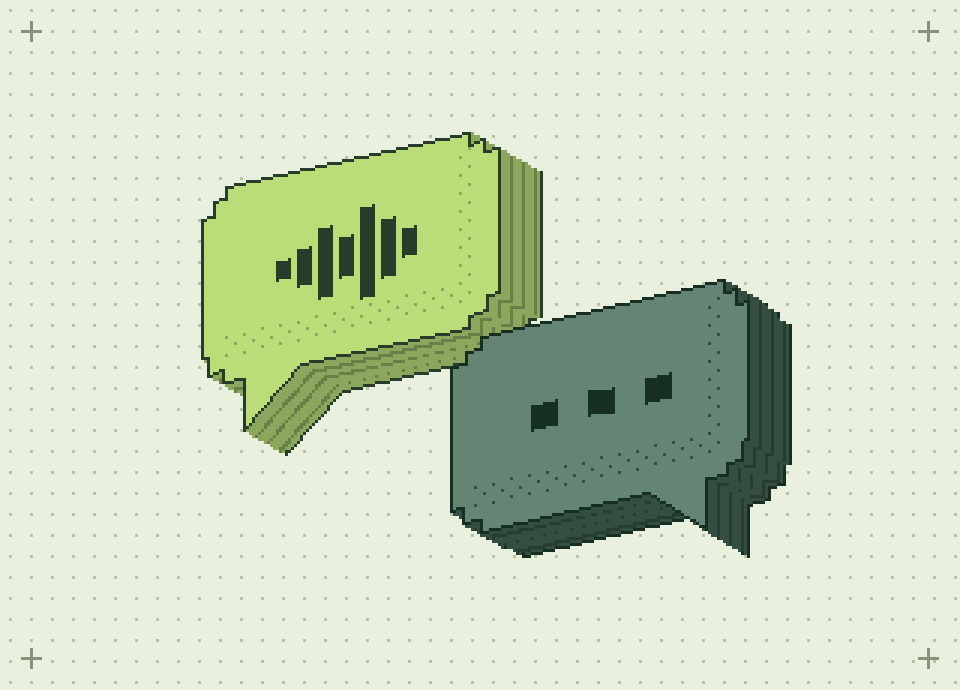

Im Wechsel sprechen
Eine Person spricht in ihrer Sprache. Das Gerät gibt die Übersetzung aus. Für die Antwort wechseln die Sprachen.
LUMENIQ übersetzt gesprochene Sprache in beide Richtungen. Für Gespräche in Behörden, Beratungsstellen und Kliniken – auch ohne Internet.

Eine Person spricht in ihrer Sprache. Das Gerät gibt die Übersetzung aus. Für die Antwort wechseln die Sprachen.
Erkennung, Übersetzung und Sprachausgabe laufen auf der Hardware in Ihrer Einrichtung. Gesprächsinhalte bleiben auf dem Gerät.
Glossare helfen, Begriffe aus dem Arbeitsalltag Ihrer Einrichtung bei der Übersetzung zu berücksichtigen.
Der lokale Prototyp verbindet drei Schritte. So wird aus einer Frage am Empfang eine hörbare Übersetzung.
Gesprächsbeispiel · Deutsch / Englisch
Die Übersetzungskette läuft bereits lokal. In Pilotversuchen untersuchen wir, wie verständlich die Ausgabe ist und wie gut das Gerät in den Gesprächsablauf passt.
Spracherkennung, Übersetzung und Sprachausgabe sind integriert. Wir arbeiten an Reaktionszeit, Bedienung und einem wartungsfreundlichen Gehäuse.
Für die begleitete Testphase ist eine kostenlose Pilotinstallation vorgesehen. Die bisherige Schätzung für die Standardlizenz liegt bei 3.000 bis 6.000 € pro System und Jahr, zuzüglich Einrichtung und optionaler Hardware. Für mehrere Standorte besprechen wir den Bedarf individuell.
Robert Linus Glenz, Joel Kypke und Julius Maximilian Waschl bringen Recht, Sprachverarbeitung und Hardwareentwicklung zusammen. Das Team kennenlernen
Sie möchten die Übersetzung in Ihrer Einrichtung ausprobieren? Erzählen Sie uns kurz, wo und in welchen Sprachen Sie das Gerät einsetzen möchten.